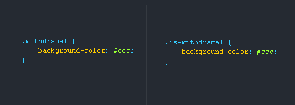
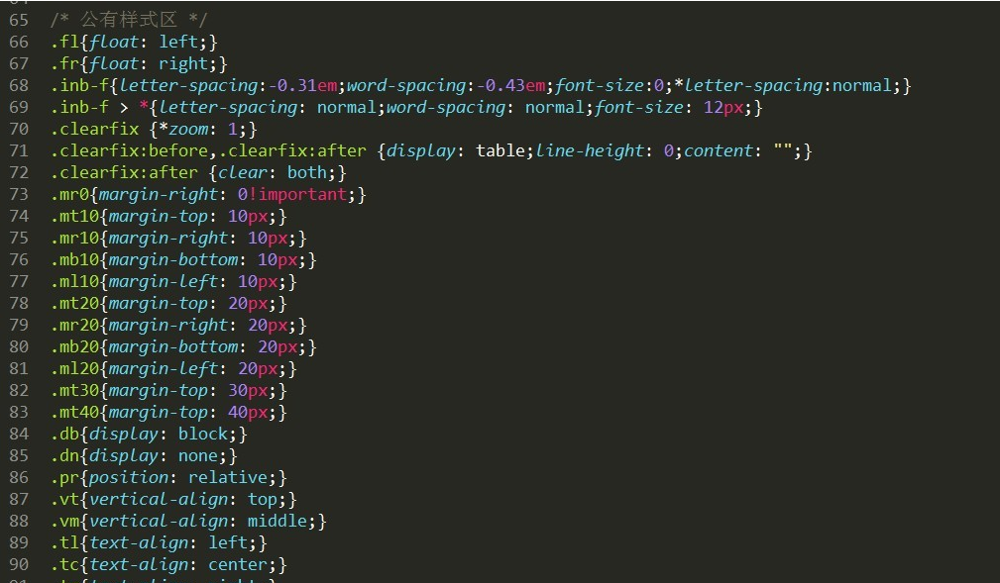

分享人：汪开放
目录
1.背景介绍
2.知识剖析
3.常见问题
4.解决方案
5.编码实战
6.扩展思考
7.参考文献
8.更多讨论
架构：如果说HTML是组织内容的骨架，那么CSS就是美化内容的油彩。通俗的讲，就是我们的骨头（HTML）撑起我们这副皮囊（内容），然后再搞点好看的服饰（CSS）点缀点缀。架构简单来说：就是将一个网站页面的骨架进行拆解，分类，编写在一起。最简单的例子：头部做一个CSS文件夹、胸部做一个CSS文件、腿部做一个CSS文件，而这些CSS文件我们称为CSS样式表组。
1.CSS书写顺序
1）位置属性(position, top, right, z-index, display, float等)
2）大小(width, height, padding, margin)
3）文字系列(font, line-height, letter-spacing, color- text-align)
4）背景(background, border等)
5）其他(animation, transition等)
2.CSS书写规范
1）使用CSS缩写属性（margin：上 左 下 右）
2)去掉小数点前的0（font-size：.4rem;）
3)简写命名（.navigation{}→→#nav{}）
5)连字符CSS选择器命名规范
1，长名称或词组可以使用中横线来为选择器命名
2，不能使用“_”下划线来命名CSS选择器，为什么呢？
6）不要随意使用id
7）为选择器添加状态前缀
头：header
内容：content/container
尾：footer
导航：nav
标志：logo
页面主题：magin
版权：copyright
主导航：mainbav
子导航：subnav
顶导航：topnav
边导航：sidebar
左导航:leftsidebar、右导航
菜单：menu、子菜单
主要的：master.css
模块:module.css
基本共用：base.css
布局、版面：layout.css
主题：themes.css
专栏：columns.css
文字：font.css
表单：forms.css
补丁：mend.css
打印：print.css
问题一：样式表和CSS书写规范以及顺序的冲突?
拆分样式表之原子类

参考一：CSS书写规范以及样式表
参考二：知乎
参考三：鑫空间：构架
1.多个CSS组成的架构和单个CSS，你会选择哪种？
2.如果选择多个样式表，你会使用原子类么？
感谢大家观看
BY : 汪开放 |